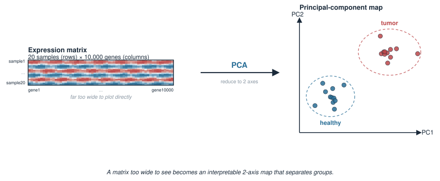
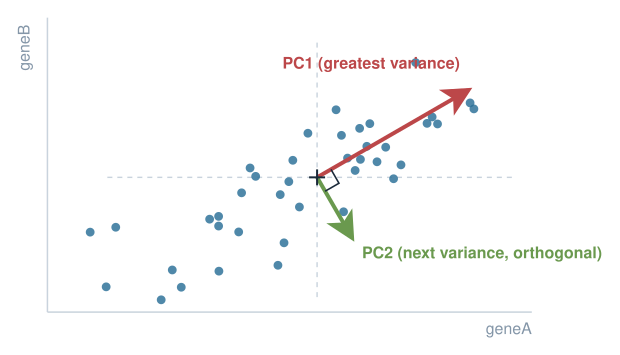
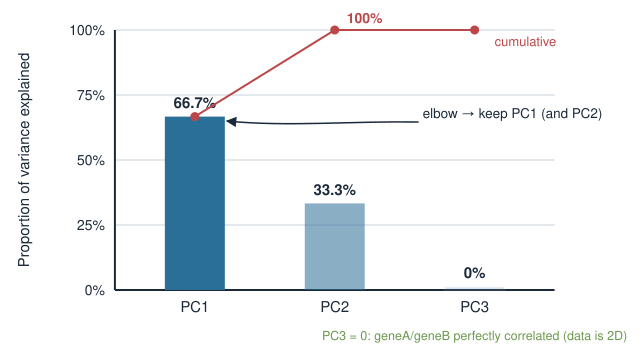
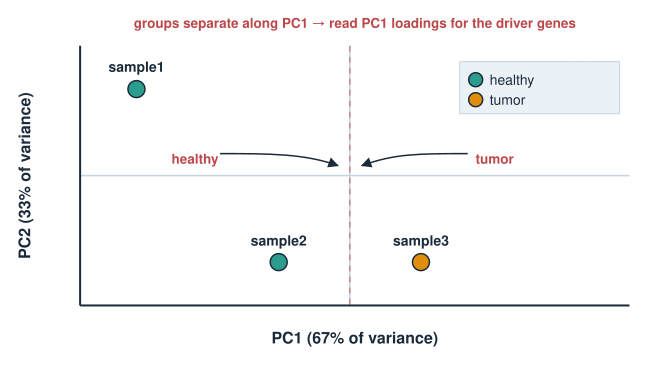
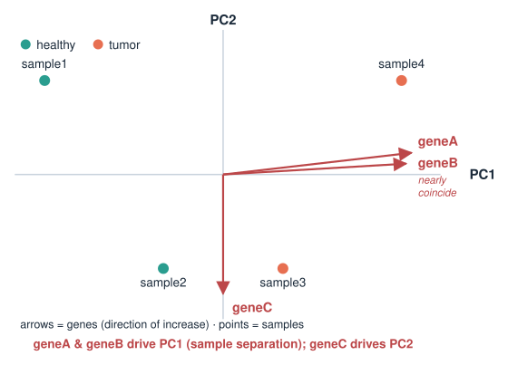
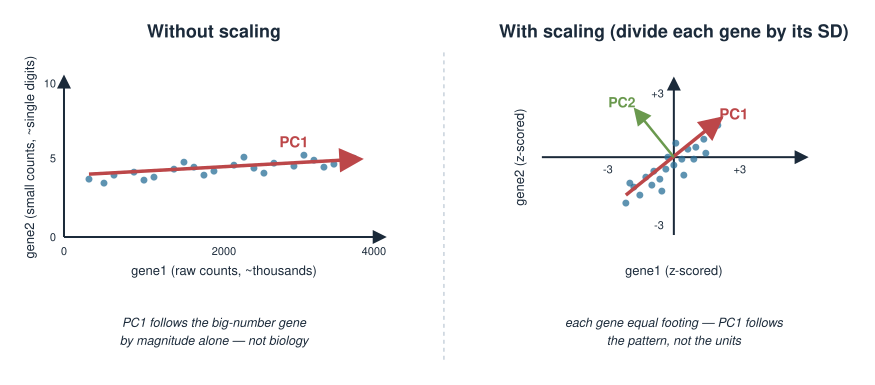

In Eigenvalues & eigenvectors you learned that the eigenvectors of a covariance matrix point along the axes of greatest variation in a dataset. Principal component analysis (PCA) is exactly that idea turned into a practical tool. Today we run it in R.
What PCA does: find new axes (principal components) that capture the most variation in a high-dimensional dataset, in order.
Run it with one function: prcomp, and inspect its three outputs — $sdev, $rotation, $x.
See that prcomp is just the eigen-decomposition of the covariance matrix — the engine you already built.
Read variance explained from $sdev, plot scores ($x) to separate sample groups, and read loadings ($rotation) to find the genes that drive the separation.
Practical craft: samples as rows, why we center, and why scaling matters when features live on different scales.
This is a hands-on day. The exam may ask you to interpret PCA output and explain what each piece means.
The biology problem
You have an expression matrix: 20 samples (rows) measured over 10,000 genes (columns). Some samples are tumor, some are healthy.
You cannot plot 10,000 dimensions. You cannot eyeball 10,000 genes per sample.
But you suspect the samples fall into groups, and that a few underlying patterns (a proliferation program, an immune program) explain most of the differences.
The question: can we collapse 10,000 gene-columns into 2 or 3 informative axes that reveal the group structure — and then ask which genes define those axes?
That is precisely what PCA delivers. The first axis is the single direction along which the samples differ the most.

What PCA is, in one picture
Think of the data cloud from Eigenvalues & eigenvectors: samples plotted in gene-space form a tilted, elongated blob.
PC1 is the direction along which the cloud is most stretched — the axis of greatest variance.
PC2 is the direction of next-greatest variance, perpendicular to PC1.
Each further PC is orthogonal to all the previous ones and captures the most remaining variance.
PCA rotates the coordinate system so the new axes line up with the natural axes of the cloud. The data does not change — only the description of it.
\[\text{principal components} = \text{eigenvectors of the covariance matrix}\]

The toy dataset we will use all lecture
Four samples, three genes. Small enough to check every number by hand.
Convention (memorise): samples are rows, features (genes) are columns. geneA and geneB rise together across samples (perfectly correlated); geneC just wobbles, independent of the trend.
One call: prcomp
pca <-prcomp(X, center =TRUE, scale. =TRUE)
Two arguments you should always think about explicitly:
center = TRUE — subtract each gene’s mean so the cloud is centered on the origin. PCA is about variation, so you must remove the mean first. (Default TRUE.)
scale. = TRUE — divide each gene by its standard deviation, putting all genes on a common scale. (Default FALSE — you usually want to set it.)
The result is a list with three pieces we will now open:
pca$sdev — standard deviation along each PC (→ variance explained),
pca$rotation — the loadings (how genes combine into PCs),
pca$x — the scores (coordinates of each sample on the PCs).
Output 1: pca$sdev and variance explained
$sdev holds the standard deviation of the data along each PC. Square it to get variance, then normalise:
pca$sdev# [1] 1.4142 1.0000 0.0000variances <- pca$sdev^2# variance captured by each PCprop <- variances /sum(variances) # proportion of total varianceround(prop, 3)# [1] 0.667 0.333 0.000cumsum(prop)# [1] 0.667 1.000 1.000
PC1 alone explains ~67% of the variation; PC1 + PC2 explain 100%. The third PC is exactly zero — because geneA and geneB are perfectly correlated, the data truly lives in two dimensions.

Output 2: pca$rotation (the loadings)
$rotation is the matrix of loadings: each column is a PC, each row a gene. It tells you how much each gene contributes to each PC.
The PC1 scores increase steadily sample1 → sample4: PCA recovered the geneA-geneB trend we planted.
These scores are what you plot to see sample structure.
Scores are the projections of each (centered, scaled) sample onto the PC directions: \[\text{scores} = X_{\text{centered, scaled}} \cdot \text{rotation}\]
The plot that starts every omics analysis
Plot PC1 score vs PC2 score, one point per sample. This 2D map often reveals the group structure hidden in thousands of genes.
plot(pca$x[, 1], pca$x[, 2],xlab ="PC1 (67% of variance)",ylab ="PC2 (33% of variance)",pch =19)text(pca$x[, 1], pca$x[, 2], labels =rownames(X), pos =3)
In a real study you would colour the points by a known label (tumor vs healthy, treated vs control) and look for separation:
group <-c("healthy", "healthy", "tumor", "tumor")plot(pca$x[, 1], pca$x[, 2], col =factor(group), pch =19)
If groups separate along PC1, then PC1’s loadings name the genes that distinguish them.

The biplot: scores and loadings together
A biplot overlays the two things we have been reading — sample scores (points) and gene loadings (arrows) — on one PC1–PC2 picture.
biplot(pca)
Points are samples positioned by their scores.
Arrows are genes; an arrow points in the direction that gene increases.
A gene whose arrow points strongly along PC1 is a gene that drives PC1 — and thus separates samples along it.
One glance links which samples differ to which genes explain the difference.

PCA is eigen-decomposition of the covariance matrix
prcomp is not magic — it is the machinery from Eigenvalues & eigenvectors. On the scaled, centered data:
Xs <-scale(X, center =TRUE, scale =TRUE) # same preprocessing prcomp doesC <-cov(Xs) # 3x3 covariance (here = correlation) matrixe <-eigen(C)e$values# [1] 2 1 0 # variance along each PC = eigenvaluespca$sdev^2# [1] 2 1 0 # identical!e$vectors # eigenvectors == columns of pca$rotation (up to sign)
The eigenvalues are the per-PC variances; the eigenvectors are the loadings. PCA = eigen-decomposition of the covariance matrix. You built this engine already.
Why centering is not optional
PCA finds directions of variation around the mean. If you skip centering, “variation” is measured from the origin instead — and PC1 will chase the mean position of the cloud, not its shape.
With genes on wildly different baseline levels (a housekeeping gene at 10,000 counts, a transcription factor at 5), the uncentered PC1 is dominated by the high-mean gene’s offset, telling you nothing.
prcomp centers by default (center = TRUE). Leave it on unless you have a specific reason.
scale. = TRUE divides each gene by its standard deviation, so every gene contributes on an equal footing.
Without scaling, a gene with large numerical variance (say raw counts in the thousands) dominates PC1 purely because its numbers are big — not because it is biologically important.
With scaling, PCA weighs the pattern of each gene equally, regardless of its units or magnitude.
When to scale:
Situation
Scale?
Features on different units/scales (gene counts, protein levels, pH)
Yes
Features already comparable (e.g. all log-transformed expression)
Often no
prcomp does not scale by default (scale. = FALSE) — decide deliberately.

Practical checklist
Before you trust a PCA plot, confirm:
Orientation: samples are rows, features are columns. (Transpose with t if your matrix is genes × samples — omics tables often are.)
Centering: on (default). PCA needs it.
Scaling: decided on purpose, based on whether features share a scale.
Missing values:prcomp cannot handle NA — impute or drop first.
Variance explained: report it on the axis labels; a PC1 with 8% is a very different story from one with 80%.
Sign/rotation: an axis may be flipped between runs or software; the interpretation is unchanged.
From toy to real data
The workflow is identical at scale — only the matrix is bigger.
# expr: a matrix with samples in rows, genes in columns# (transpose first if yours is genes x samples)pca <-prcomp(expr, center =TRUE, scale. =TRUE)# how many PCs carry real signal?prop <- pca$sdev^2/sum(pca$sdev^2)round(prop[1:5], 3)# the map: colour samples by a metadata labelplot(pca$x[, 1], pca$x[, 2], col =factor(metadata$condition), pch =19)# the drivers: top genes on PC1sort(abs(pca$rotation[, 1]), decreasing =TRUE)[1:20]
For large genomics datasets you will later meet production tools (Bioconductor workflows, DESeq2’s plotPCA) that wrap these same steps with sensible defaults.
Summary
Idea
In R
Run PCA (samples = rows)
prcomp(X, center=TRUE, scale.=TRUE)
Std dev per PC → variance
pca$sdev, then pca$sdev^2
Proportion of variance
pca$sdev^2 / sum(pca$sdev^2)
Loadings (gene weights)
pca$rotation — the eigenvectors
Scores (sample coords)
pca$x — what you plot
The map
plot(pca$x[,1], pca$x[,2])
Map + legend in one
biplot(pca)
Same as
eigen(cov(scale(X)))
Core message: PCA is the eigen-decomposition of the covariance matrix — it finds ordered, orthogonal axes of variation. Scores map your samples; loadings name the genes; sdev says how much each axis matters.
Builds on: Eigenvalues & eigenvectors. Leads to: clustering, and latent-variable methods in the Applications block.